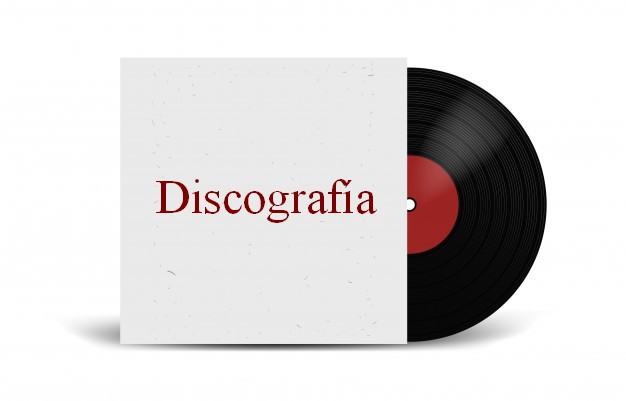

<!DOCTYPE html>
<html lang="es" >
<head>
<title>ricardocontard.ml</title>
<meta charset="utf-8">
<meta http-equiv="X-UA-Compatible" content="IE=edge">
<meta name="viewport" content="width=device-width, initial-scale=1">
<meta name="mobile-web-app-capable" content="yes">
<meta name="apple-mobile-web-app-capable" content="yes" />
<meta name="apple-mobile-web-app-title" content="ricardocontard.ml" />
<meta name="generator" content="VisualNEO Web (19.9.16)" />
<meta name="date" content="2022-11-03 21:51" />
<meta name="version" content="1.0" />
<meta name="copyright" content="Copyright 2022 IoSoft Producciones" />
<meta name="keywords" content="ricardocontard, ricardo contard, Ricardo Contard, iosoft, iosoft producciones, musica, música, literatura,">
<link rel="shortcut icon" href="favicon.png">
<link rel="stylesheet" href="css/bootstrap.min.css">
<link rel="stylesheet" href="css/bootstrap-theme.min.css">
<link rel="stylesheet" href="css/nzAnimate.min.css">
<link rel="stylesheet" href="css/neoapp-ui.min.css">
<link rel="stylesheet" href="css/style.css">
</head>
<body id="ng-app" ng-app="NeoApp" ng-cloak>
<div ng-controller="NeoApp_CoreCtrl" ng-view ng-cloak id="ng-view" class="app-viewport[NAB._pageEffect]"></div>
<script type="text/ng-template" id="Inicio">
<div id="Inicio">
<div id="Titulo" class="row [NAB.Titulo_effect]" ng-style="NAB.Titulo_style" ng-hide="NAB.Titulo_hidden" ng-disabled="NAB.Titulo_disabled">
<div id="Container1" class="col-sm-10 [NAB.Container1_effect]" ng-style="NAB.Container1_style" ng-hide="NAB.Container1_hidden" ng-disabled="NAB.Container1_disabled" ng-click="Container1_click()"><div align="right">&nbsp;&nbsp;&nbsp;<h3><font color="#FFFFFF" size="6" face="Tahoma">ricardocontard</font><font color="#0392CE" size="6" face="Tahoma">.ml</font></h3></div>
</div>
<div id="logo" class="col-sm-2 [NAB.logo_effect]" ng-style="NAB.logo_style" ng-hide="NAB.logo_hidden" ng-disabled="NAB.logo_disabled" ng-click="logo_click()"><div align="left"></div>
</div>
</div>
<div id="Container4" class="[NAB.Container4_effect]" ng-style="NAB.Container4_style" ng-hide="NAB.Container4_hidden" ng-disabled="NAB.Container4_disabled" ng-click="Container4_click()"><br><div align="center">&nbsp;&nbsp;&nbsp;<font size="4">Libros</font></div><br>
</div>
<div id="Container3" class="[NAB.Container3_effect]" ng-style="NAB.Container3_style" ng-hide="NAB.Container3_hidden" ng-disabled="NAB.Container3_disabled" ng-click="Container3_click()"><br><div align="center">&nbsp;&nbsp;&nbsp;<font size="4">Música</font></div><br>
</div>
<div id="Container2" class="[NAB.Container2_effect]" ng-style="NAB.Container2_style" ng-hide="NAB.Container2_hidden" ng-disabled="NAB.Container2_disabled" ng-click="Container2_click()"><br><div align="center">&nbsp;&nbsp;&nbsp;<font size="4">Cortos</font></div><br>
</div>
<div id="Container5" class="[NAB.Container5_effect]" ng-style="NAB.Container5_style" ng-hide="NAB.Container5_hidden" ng-disabled="NAB.Container5_disabled" ng-click="Container5_click()"><br><div align="center">&nbsp;&nbsp;&nbsp;<font size="4">Desarrollo de Software</font></div><br>
</div>
<div id="Container6" class="[NAB.Container6_effect]" ng-style="NAB.Container6_style" ng-hide="NAB.Container6_hidden" ng-disabled="NAB.Container6_disabled" ng-click="Container6_click()"><br><div align="center">&nbsp;&nbsp;&nbsp;<font size="4">Páginas Web</font></div><br>
</div>
<div id="Container7" class="[NAB.Container7_effect]" ng-style="NAB.Container7_style" ng-hide="NAB.Container7_hidden" ng-disabled="NAB.Container7_disabled" ng-click="Container7_click()"><br><div align="center">&nbsp;&nbsp;&nbsp;<font size="4">Radio en línea</font></div><br>
</div>
<div id="Container8" class="[NAB.Container8_effect]" ng-style="NAB.Container8_style" ng-hide="NAB.Container8_hidden" ng-disabled="NAB.Container8_disabled" ng-click="Container8_click()"><br><div align="center">&nbsp;&nbsp;&nbsp;<font size="4">Galería</font></div><br>
</div>
<div id="Container9" class="[NAB.Container9_effect]" ng-style="NAB.Container9_style" ng-hide="NAB.Container9_hidden" ng-disabled="NAB.Container9_disabled" ng-click="Container9_click()"><br><div align="center">&nbsp;&nbsp;&nbsp;<font size="4">Biografía</font></div><br>
</div>
<div id="Container10" class="[NAB.Container10_effect]" ng-style="NAB.Container10_style" ng-hide="NAB.Container10_hidden" ng-disabled="NAB.Container10_disabled" ng-click="Container10_click()"><br><div align="center">&nbsp;&nbsp;&nbsp;<font size="4">Contacto</font></div><br>
</div>
</div>
</script>
<script type="text/ng-template" id="musica">
<div id="musica">
<div id="Titulo" class="row [NAB.Titulo_effect]" ng-style="NAB.Titulo_style" ng-hide="NAB.Titulo_hidden" ng-disabled="NAB.Titulo_disabled">
<div id="Container1" class="col-sm-10 [NAB.Container1_effect]" ng-style="NAB.Container1_style" ng-hide="NAB.Container1_hidden" ng-disabled="NAB.Container1_disabled" ng-click="Container1_click()"><div align="right">&nbsp;&nbsp;&nbsp;<h3><font color="#FFFFFF" size="6" face="Tahoma">ricardocontard</font><font color="#0392CE" size="6" face="Tahoma">.ml</font></h3></div>
</div>
<div id="logo" class="col-sm-2 [NAB.logo_effect]" ng-style="NAB.logo_style" ng-hide="NAB.logo_hidden" ng-disabled="NAB.logo_disabled" ng-click="logo_click()"><div align="left"></div>
</div>
</div>
<div id="Container12" class="row [NAB.Container12_effect]" ng-style="NAB.Container12_style" ng-hide="NAB.Container12_hidden" ng-disabled="NAB.Container12_disabled"><html><body><center><br><br>
	<p><a href="img\solista.jpg" target="_blank" title="Solista"></a></p><br><div>Corría el año 1992 cuando me compraron mi primera guitarra; a la vez que en mi Concepción del Uruguay comenzaban a implementarse los Talleres Culturales Barriales (municipales y gratuitos).</div><div>Empezamos con mis primos y con mi hermano a concurrir en la sede del Club Almagro. Allí conocimos a Alberto Benítez, Fabián Galarraga y Marcelo Campo; nuestros primeros maestros de canto y guitarra.</div><div>Años más tarde se sumaría al equipo de estudiantes mi padre Miguel (El Gaucho Mercié) y contaríamos como profesor también a Rodolfo Maddalena.</div><div><br/></div><div>A partir de esos años fui parte de varios grupos de compañeros, compinches y amigos en la música...</div>
	<figure>

    <figcaption></figcaption>
  </figure>
<br>
	<p><a href="img\tabai.jpg" target="_blank" title="Conjunto 'Los Tabaí'"></a></p><br><p>
Primero formamos el grupo &quot;<b>Los Tabaí</b>&quot;, con mi primo Guillermo Muñoz y Ricardo Martín (posteriormente se sumaría Walter Martín en el bajo) (años 1995-1998 aprox.)
</p>

	<div>Luego nos incorporamos junto a Rodrigo López a un conjunto chamamecero de Colón: &quot;<b>Sergio Pinget y su conjunto</b>&quot;.</div><div>Acompañaron también Federico Premat y Daniel Follonier. Llegamos a grabar dos casets en Paysandú. Además nos presentamos en la Fiesta Nacional de la Artesanía como grupo soporte de Soledad Pastoruti. (años 1998-1999 aprox.)</div>
<br>
	<p><a href="img\pinget.jpg" target="_blank" title="Sergio Pinget y su conjunto"></a></p>
<br>

	<p></p><p>
Años más tarde formé parte del grupo &quot;<b>Acullá</b></p>
<br>
	<p><a href="img\aculla.jpg" target="_blank" title="Conjunto 'Acullá'"></a></p><br>
	<div>En esos años además de grupos de folklore, integré un grupo de cumbia llamado &quot;<b>Omega</b>&quot;, y dos dúos; &quot;&quot; con mi amigo Julio Vérnaz, y &quot;&quot; con mi primo Eduardo &quot;Tito&quot; Sánchez.</div><div><br/></div><div>Otro de los grupos que marcaron mis años posteriores fueron &quot;<b>Río de Voces</b>&quot; (no hay registro fotográfico pero estaba integrado por Paola Izaguirre, Nicolás Rizo, Claudio Pérez y Lisandro González)</div><div><br/></div><div>Y antes de llegar a mi carrera solista y más creativa, formé parte de un grupo de folk-rock llamado &quot;<b>Trébol</b>&quot;, junto a los amigos Iván Pastorini, Agustín García y Tomás Ballay.</div><div><br/></div><div>Personalmente, me gusta pensar que estas dos últimas experiencias &quot;aún no han bajado del todo el telón...&quot;</div>
	<p></p><br>
	<p><a href="img\vanguardia.jpg" target="_blank" title="La Vanguardia"></a></p>
	<p><br>
La Vanguardia (con mi primo Tito)
</p>
	<p></p><br>
	<p><a href="img\familia1.jpg" target="_blank"></a></p>
	<p><br>
Acompañando a mi padre, el Gaucho Mercié
</p>
	<p></p><br>
	<p><a href="img\trebol.jpg" target="_blank" title="Grupo Trébol"></a></p>
	<p><br>
Grupo Trébol en una de nuestras geniales &quot;cantatas&quot;
</p>
	<p></p>

<p></p>
	<p><a href="img\riodevoces.jpg" target="_blank" title="Río de Voces"></a></p>
	<p><br>
Otra vuelta de tuerca a las músicas con el conjunto "Río de Voces"
</p><br><br>
	<p><a href="img\familia2.jpg" target="_blank"></a></p><br>
	<div align="center">Con mi hermano Juan Pablo,con quien &quot;nunca dejamos el arte...&quot;</div>
<br><br><br>
</center></body></html>
</div>

</div>
</script>
<script type="text/ng-template" id="discografia">
<div id="discografia">
<div id="Titulo" class="row [NAB.Titulo_effect]" ng-style="NAB.Titulo_style" ng-hide="NAB.Titulo_hidden" ng-disabled="NAB.Titulo_disabled">
<div id="Container1" class="col-sm-10 [NAB.Container1_effect]" ng-style="NAB.Container1_style" ng-hide="NAB.Container1_hidden" ng-disabled="NAB.Container1_disabled" ng-click="Container1_click()"><div align="right">&nbsp;&nbsp;&nbsp;<h3><font color="#FFFFFF" size="6" face="Tahoma">ricardocontard</font><font color="#0392CE" size="6" face="Tahoma">.ml</font></h3></div>
</div>
<div id="logo" class="col-sm-2 [NAB.logo_effect]" ng-style="NAB.logo_style" ng-hide="NAB.logo_hidden" ng-disabled="NAB.logo_disabled" ng-click="logo_click()"><div align="left"></div>
</div>
</div>
<div id="discos" class="row [NAB.discos_effect]" ng-style="NAB.discos_style" ng-hide="NAB.discos_hidden" ng-disabled="NAB.discos_disabled"><div align="center"><br><br><br><hr><br>
	<p></p>Desde 2000 que grabé mi primer disco con las primeras canciones,
en el estudio de Julio Turkzak (donde también grabó mi padre su primer disco),
éstos han sido todas las recopilaciones de temas de mi autoría (y algunos prestados también...)</div>
<div><br></div><div>1.&nbsp;&nbsp; &nbsp; &nbsp; &nbsp;Zapatillas (2001)</div>
<div>2.&nbsp;&nbsp; &nbsp; &nbsp; &nbsp;Como el viento (2004)</div>
<div>3.&nbsp;&nbsp; &nbsp; &nbsp; &nbsp;El Vendedor de Canciones (2006)</div>
<div>4.&nbsp;&nbsp; &nbsp; &nbsp; &nbsp;Canciones para Valentino (2007)</div>
<div>5.&nbsp;&nbsp; &nbsp; &nbsp; &nbsp;Lo esencial es invisible a los ojos (2007)</div>
<div>6.&nbsp;&nbsp; &nbsp; &nbsp; &nbsp;Mensaje 1 (2007)</div>
<div>7.&nbsp;&nbsp; &nbsp; &nbsp; &nbsp;Mensaje 2 (2007)</div>
<div>8.&nbsp;&nbsp; &nbsp; &nbsp; &nbsp;Volando por el éter (en vivo en &quot;FM Sol&quot;) (2008)</div>
<div>9.&nbsp;&nbsp; &nbsp; &nbsp; &nbsp;Odas (2008)</div>
<div>10.&nbsp;&nbsp; &nbsp; &nbsp; &nbsp;Canciones de amor para Marisol (2009)</div>
<div>11.&nbsp;&nbsp; &nbsp; &nbsp; &nbsp;Amasando (2009)</div>
<div>12.&nbsp;&nbsp; &nbsp; &nbsp; &nbsp;Canciones de bolsillo (2009)</div>
<div>13.&nbsp;&nbsp; &nbsp; &nbsp; &nbsp;Lindas canciones (…para saberlas cantar) (2010)</div>
<div>14.&nbsp;&nbsp; &nbsp; &nbsp; &nbsp;Todo lo que buscamos fuera (2010)</div>
<div>15.&nbsp;&nbsp; &nbsp; &nbsp; &nbsp;En vivo (31-10-2010)</div>
<div>16.&nbsp;&nbsp; &nbsp; &nbsp; &nbsp;Adentro (2011)</div>
<div>17.&nbsp;&nbsp; &nbsp; &nbsp; &nbsp;Botellas en el mar (2012)</div>
<div>18.&nbsp;&nbsp; &nbsp; &nbsp; &nbsp;Con el fuego en las manos (2013)</div>
<div>19.&nbsp;&nbsp; &nbsp; &nbsp; &nbsp;Diez años después (homenaje a Grupo Trébol) (2013)</div>
<div>20.&nbsp;&nbsp; &nbsp; &nbsp; &nbsp;Abierto (2013)</div>
<div>21.&nbsp;&nbsp; &nbsp; &nbsp; &nbsp;Soy (la nueva visión) (2014)</div>
<div>22.&nbsp;&nbsp; &nbsp; &nbsp; &nbsp;Yo quiero ser (2014)</div>
<div>23.&nbsp;&nbsp; &nbsp; &nbsp; &nbsp;Coral (El cantar de los cantares) (2015)</div>
<div>24.&nbsp;&nbsp; &nbsp; &nbsp; &nbsp;Desnudo (CD+DVD) (2016)</div>
<div>25.&nbsp;&nbsp; &nbsp; &nbsp; &nbsp;Alas (CD+Libro) (2016)</div>
<div>26.&nbsp;&nbsp; &nbsp; &nbsp; &nbsp;Trébol en vivo (2016)</div>
<div>27.&nbsp;&nbsp; &nbsp; &nbsp; &nbsp;La maleta (En vivo 10-11-2017)</div>
<div>28.&nbsp;&nbsp; &nbsp; &nbsp; &nbsp;Pinochetto (2019)</div>
<div>29.&nbsp;&nbsp; &nbsp; &nbsp; &nbsp;Edificio 21 (2020)</div>
<div>30.&nbsp;&nbsp; &nbsp; &nbsp; &nbsp;XL (2020)</div>
	<p></p><br><br>
Si <i>le pica la curiosidad</i>, puede descargar un compilado de algunas canciones comprimidas en un archivo <a href="http://docs.google.com/uc?export=download&id=1T5EhP2ZbCLA0AgypLpvtTYI9MOav2mYH" target="_blank"></a> encriptado (tendrás que solicitar la contraseña...).
	<p></p>
<br><br><br>
<center><a href="https://micancionero.ml" target="_blank"><i>Quien quiera oir, que oiga...</i></a></center>
<br>
</div>
</div>
</script>
<script type="text/ng-template" id="libros">
<div id="libros">
<div id="Titulo" class="row [NAB.Titulo_effect]" ng-style="NAB.Titulo_style" ng-hide="NAB.Titulo_hidden" ng-disabled="NAB.Titulo_disabled">
<div id="Container1" class="col-sm-10 [NAB.Container1_effect]" ng-style="NAB.Container1_style" ng-hide="NAB.Container1_hidden" ng-disabled="NAB.Container1_disabled" ng-click="Container1_click()"><div align="right">&nbsp;&nbsp;&nbsp;<h3><font color="#FFFFFF" size="6" face="Tahoma">ricardocontard</font><font color="#0392CE" size="6" face="Tahoma">.ml</font></h3></div>
</div>
<div id="logo" class="col-sm-2 [NAB.logo_effect]" ng-style="NAB.logo_style" ng-hide="NAB.logo_hidden" ng-disabled="NAB.logo_disabled" ng-click="logo_click()"><div align="left"></div>
</div>
</div>
<div id="Paragraph1" class="row [NAB.Paragraph1_effect]" ng-style="NAB.Paragraph1_style" ng-hide="NAB.Paragraph1_hidden" ng-disabled="NAB.Paragraph1_disabled"><br><br><br>Corta un trozo de madera y brotará una historia. Levanta una piedra del camino y aparecerá un verso. Mira detrás del ropero y hallarás anécdotas. Corre las cortinas y te iluminarán los cuentos del paisaje. Revisa viejos cuadernos y te encontrarás con las leyendas y mitos de los antepasados de la persona que sos hoy.<br>Porque somos las historias que inventamos día a día. Porque somos el libreto de la obra de la vida. Constituidos por palabras, oraciones y versos, vamos caminando hacia la última página.<br><br>En esta antología resumo mis días, palabras, cuentos y versos; para que no se me pierdan en el eterno olvido del tiempo.<br><hr><br><body> <center><a target="_blank" href="https://drive.google.com/file/d/1f63RQL-dkfc3nlpfe6tBT0m0Vn2mby5v/view?usp=sharing"><h4>Los relatos del Señor Tiempo</h4></a></center><br><center><a target="_blank" href="https://drive.google.com/file/d/1DPVUdJtzjfsjVvyoPBJjlHvAoBdzseqE/view?usp=sharing"><h4>El tren de los Vendedores de Teorías</h4></a></center><br><center><a target="_blank" href="https://drive.google.com/file/d/1aUk1yRIsYSnanJBpYrq6_8Ik2lplWDtp/view?usp=sharing"><h4>Páginas...</h4></a></center><br><center><a target="_blank" href="https://drive.google.com/file/d/1cjax-VzJwG8STKr1PD2FvAwliW_NkkdV/view?usp=sharing"><h4>Apoteosis</h4></a></center><br><center><a target="_blank" href="https://drive.google.com/file/d/1E0nP9W5cdPOLAzYTdaXSnyPjPnhqd-1z/view?usp=sharing"><h4>Un viaje increíble</h4></a></center><br><center><a target="_blank" href="https://drive.google.com/file/d/1WLbF8We7arsdcAP9nZErGSC5TI3IhVDq/view?usp=sharing"><h4>Los laberintos</h4></a></center><br><center><a target="_blank" href="https://drive.google.com/file/d/1-IVJfKIsIppmJXuPTUkc3OK9dvsgpSLY/view?usp=sharing"><h4>Cronología simple de un verdadero amor</h4></a></center><br><center><a target="_blank" href="https://drive.google.com/file/d/1XuGT3NHiruvX2P-FZ-SsIp55eyQjOSFm/view?usp=sharing"><h4>Poesías y cuentos</h4></a></center><br><center><a target="_blank" href="https://drive.google.com/file/d/1yeXusCIv1PeoQifdYVyGy0rKhFErCBsV/view?usp=sharing"><h4>Casas de locos</h4></a></center><br><center><a target="_blank" href="https://drive.google.com/file/d/10FgVKo-jB78y2n2A0tS7boR4QOI2b-Xh/view?usp=sharing"><h4>La leyenda del sol</h4></a></center><br><center><a target="_blank" href="https://drive.google.com/file/d/1v0bNRDmNhqy1mJHdYu5a5SS1kiZhQ9Rv/view?usp=sharing"><h4>Cancionero</h4></a></center><br><center><a target="_blank" href="https://drive.google.com/file/d/1-WyOfbA40P8ZhR59-T9N7U5SXHDrsNoO/view?usp=sharing"><h4>Cuaderno de notas</h4></a></center><br><center><a target="_blank" href="https://drive.google.com/file/d/1IQfoec-TpOIXJ48SJmCTuFynLqOkkWkn/view?usp=sharing"><h4>El hombre cabeza de caballo</h4></a></center><br><center><a target="_blank" href="https://drive.google.com/file/d/1dz86XCdQDeTES_gA_-r5qg33u15YPv87/view?usp=sharing"><h4>La magia sigue intacta</h4></a></center><br></body><br><hr><center><br>NOTA: Por cuestiones legales (Ley 11.723) los lectores<br>no podrán imprimir ni descargar los archivos presentados.</center><hr><br><body><div align="center"><b>Premios literarios</b></div><div align="center"><br></div><div align="center"><br></div><div>-&nbsp;<b>2º Premio</b>&nbsp;en el &quot;V Concurso&nbsp; de poemas y poesías&quot; en la E.P.N.M. &quot;Héctor de Elía&quot; (Colonia Elía, Entre Ríos) 30/09/1999</div><div><br></div><div>-&nbsp;<b>3º Premio</b>&nbsp; Categoría &quot;B&quot; en el &quot;VIII Concurso&nbsp; de poesías&quot; en la E.P.N.M. &quot;Héctor de Elía&quot; (Colonia Elía, Entre Ríos) con la poesía &quot;Yo fui sol&quot; 27/09/2002</div><div><br></div><div>-&nbsp;<b>Finalista</b>&nbsp;en el &quot;VI Certamen Internacional De Los Cuatro Vientos de Poesía y Narrativa Breve&quot; (Editorial DE LOS CUATRO VIENTOS de Buenos Aires) integrando la antología &quot;Homenaje a Oliverio Girondo&quot; 13/12/2003</div><div><br></div><div>-&nbsp;<b>Mención</b>&nbsp;Categoría &quot;B&quot; en el &quot;XI Concurso&nbsp; de poesías y cuentos cortos&quot; en la E.P.N.M. &quot;Héctor de Elía&quot; (Colonia Elía, Entre Ríos) 16/09/2005</div><div><br></div><div>-&nbsp;<b>1º Premio</b>&nbsp;Cuentos Categoría &quot;B&quot; en el &quot;XVII Concurso&nbsp; de poesías y cuentos cortos&quot; en la E.P.N.M. &quot;Héctor de Elía&quot; (Colonia Elía, Entre Ríos) 18/12/2011</div><div><br></div><div>-&nbsp;<b>2º Premio</b>&nbsp;Poesía y&nbsp;<b>3º Premio</b>&nbsp;Cuentos Categoría &quot;B&quot; en el &quot;XVIII Concurso&nbsp; de poesías y cuentos cortos&quot; en la E.P.N.M. &quot;Héctor de Elía&quot; (Colonia Elía, Entre Ríos) Nov. de 2012</div><div><br></div><div>-&nbsp;<b>2° Premio</b>&nbsp;en el &quot;XIX Concurso de Poesía y Cuentos Cortos&quot; de la EPNM &quot;Héctor de Elía&quot; con el cuento &quot;Las puertas&quot;. Noviembre de 2013</div><div><br></div><div>-&nbsp;<b>2° Premio</b>&nbsp;en categoría B (cuentos) en el &quot;XX Concurso de Poesía y Cuentos Cortos&quot; de la EPNM &quot;Héctor de Elía&quot;. Octubre de 2014</div><div><br></div><div>-&nbsp;<b>1° y 2° Premios</b>&nbsp;en categoría B (cuentos) en el &quot;XXI Concurso de Poesía y Cuentos Cortos&quot; de la EPNM &quot;Héctor de Elía&quot;. Noviembre de 2015</div><div><br></div><div>-&nbsp;<b>1° Premio</b>&nbsp;y&nbsp;<b>RECONOCIMIENTO</b>&nbsp;en categoría B (cuentos) en el &quot;XXII Concurso de Poesía y Cuentos Cortos&quot; de la EPNM &quot;Héctor de Elía&quot; en 2016</div><div><br></div><div>-&nbsp;<b>2º Premio</b>&nbsp;Categoría Mayores en el &quot;1º CONCURSO DE POESÍA DEL SUM DE LA CANTERA 25&quot; con la poesía &quot;Conjuro&quot; (Concepción del Uruguay) en mayo de 2017</div><div><br></div><div>-&nbsp;<b>2º Premio</b>&nbsp;(poesía) y&nbsp;<b>3º Premio</b>&nbsp;(cuento) en el &quot;XXIII CONCURSO PROVINCIAL DE POESÍAS Y CUENTOS CORTOS&quot; de la EPNM &quot;Héctor de Elía&quot; en 2017</div></body><br><hr><br><br><br><div align="center">1ª edición</div><div align="center"><br></div><div align="center">© Ricardo Martín Contard, 2018</div><div align="center"><br></div><div align="center">© Edición y publicación del autor, 2018</div><div align="center"><br></div><div align="center">© Impreso en Librería “Mis colores”; 33 del Oeste Sur 63, Villa Las Lomas Sur,</div><div align="center"><br></div><div align="center">Concepción del Uruguay, Entre Ríos. 2019</div><div align="center"><br></div><div align="center">ISBN: 978-987-42-8887-5</div><div align="center"><br></div><div align="center">Impreso en la Argentina.</div><div align="center"><br></div><div align="center">Hecho el depósito que previene la ley 11.723.</div><div align="center"><br></div><div align="center">Todos los derechos reservados. Esta publicación no puede ser reproducida, ni en todo ni en parte, ni registrada en, o transmitida por un sistema de recuperación de información, en ninguna forma ni por ningún medio, sea mecánico, fotoquímico, electrónico, magnético, electroóptico, por fotocopia o cualquier otro, sin permiso previo por escrito del titular del copycenter.</div><div align="center"><br></div><div align="center"><i>No lo hagan en sus casas, cómprenlo hecho</i></div></div>
</div>
</script>
<script type="text/ng-template" id="cortos">
<div id="cortos">
<div id="Titulo" class="row [NAB.Titulo_effect]" ng-style="NAB.Titulo_style" ng-hide="NAB.Titulo_hidden" ng-disabled="NAB.Titulo_disabled">
<div id="Container1" class="col-sm-10 [NAB.Container1_effect]" ng-style="NAB.Container1_style" ng-hide="NAB.Container1_hidden" ng-disabled="NAB.Container1_disabled" ng-click="Container1_click()"><div align="right">&nbsp;&nbsp;&nbsp;<h3><font color="#FFFFFF" size="6" face="Tahoma">ricardocontard</font><font color="#0392CE" size="6" face="Tahoma">.ml</font></h3></div>
</div>
<div id="logo" class="col-sm-2 [NAB.logo_effect]" ng-style="NAB.logo_style" ng-hide="NAB.logo_hidden" ng-disabled="NAB.logo_disabled" ng-click="logo_click()"><div align="left"></div>
</div>
</div>
<div id="intro" class="row [NAB.intro_effect]" ng-style="NAB.intro_style" ng-hide="NAB.intro_hidden" ng-disabled="NAB.intro_disabled"><div align="center"><br>
<br><br>Fuimos, somos y podríamos seguir siendo un grupo de gente interesada en jugar con distintas herramientas tecnológicas (celulares, cámaras, computadoras...) con el solo fin de plasmar historias, experiencias y ficciones en cortometrajes poco profesionales pero muy divertidos; para luego compartirlos en éste y otros espacios...<br>
</center><br><hr>

<div align="center"><br>
<h2>"Mensaje"</h2>&nbsp;&nbsp;&nbsp;&nbsp;<a href="https://drive.google.com/file/d/1knv_edwbhsMXYX_trDJ8HrgpcUa3zCeQ/preview" target="_blank"></a><br><hr><br><br><br>

<h2>"El primer amor"</h2>&nbsp;&nbsp;&nbsp;&nbsp;<a href="https://drive.google.com/file/d/1DLcQtX3zs3KiqQF009RQHqgyl95mPoj-/preview" target="_blank"></a><br><hr><br><br><br>

<h2>"Vidas miserables"</h2>&nbsp;&nbsp;&nbsp;&nbsp;<a href="https://drive.google.com/file/d/1auUA0aeErfUlxOewjlsht1FY3Bepp7QM/preview" target="_blank"></a><br><hr><br><br><br>

<h2>"Detalles"</h2>&nbsp;&nbsp;&nbsp;&nbsp;<a href="https://drive.google.com/file/d/1gkWBDtcOD9D7a7YuaQgCfCXnQ2l2dJCt/preview" target="_blank"></a><br><hr><br><br><br>

<h2>"Leer te transporta"</h2>&nbsp;&nbsp;&nbsp;&nbsp;<a href="https://drive.google.com/file/d/1D5x8R6Gjs7SrbjBSL-V8EEs2sTo8xSN-/preview" target="_blank"></a><br><hr><br><br><br>

<h2>"Defensa"</h2>&nbsp;&nbsp;&nbsp;&nbsp;<a href="https://drive.google.com/file/d/1aJoPydUifaWknmujABmo7AYfdflpN-3D/preview" target="_blank"></a><br><hr><br><br><br>

<h2>"Misterio en el bosque"</h2>&nbsp;&nbsp;&nbsp;&nbsp;<a href="https://drive.google.com/file/d/1PEJuWgYhSmJXebwnWTQrLzdjovUdnmje/preview" target="_blank"></a><br><hr><br><br><br>
</div>
</div>
</div>
</script>
<script type="text/ng-template" id="webs">
<div id="webs">
<div id="Titulo" class="row [NAB.Titulo_effect]" ng-style="NAB.Titulo_style" ng-hide="NAB.Titulo_hidden" ng-disabled="NAB.Titulo_disabled">
<div id="Container1" class="col-sm-10 [NAB.Container1_effect]" ng-style="NAB.Container1_style" ng-hide="NAB.Container1_hidden" ng-disabled="NAB.Container1_disabled" ng-click="Container1_click()"><div align="right">&nbsp;&nbsp;&nbsp;<h3><font color="#FFFFFF" size="6" face="Tahoma">ricardocontard</font><font color="#0392CE" size="6" face="Tahoma">.ml</font></h3></div>
</div>
<div id="logo" class="col-sm-2 [NAB.logo_effect]" ng-style="NAB.logo_style" ng-hide="NAB.logo_hidden" ng-disabled="NAB.logo_disabled" ng-click="logo_click()"><div align="left"></div>
</div>
</div>
<div id="Container11" class="row [NAB.Container11_effect]" ng-style="NAB.Container11_style" ng-hide="NAB.Container11_hidden" ng-disabled="NAB.Container11_disabled"><div align="center">
<br><br>
<br>
<a href="https://mibiblioteca.ml" target="_blank"><h2>https://mibiblioteca.ml</h2></a><br>
Una guía de archivos en formato PDF (portable document file) especilizados en bibliotecología, ciencias de la información y documentación, y algunas otras disciplinas.
Incluye los títulos y links de descarga. Todos los archivos están alojados en Google Drive.<br><br></div><hr>

<div align="center">
<br><br>
<br>
<a href="http://pinochetto.ml" target="_blank"><h2>http://pinochetto.ml</h2></a><br>
Uno de los proyectos del año 2020 fue crear una Radio en Línea familiar, para comunicarnos y entretenernos mutuamente durante este período tan "quedate en casa";
compartiendo momentos de diversión, buena música y desafíos muy interesantes, interactuando con un creciente número de oyentes que se fue renovando.
Llegamos a emitir 43 programas, de los cuales la mayoría quedaron registrados y están disponibles para escuchar en el blog de la Radio.<br><br></div><hr>

<div align="center">
<br><br>
<br>
<a href="https://volver-a-creer7.webnode.es" target="_blank"><h2>https://volver-a-creer7.webnode.es</h2></a><br>
Quizás el único testimonio en la web del épico proyecto de un grupo de amigos, en un pueblo del Departamento Colón (Entre Ríos, Argentina), quienes se propusieron realizar una película con los materiales y recursos mínimos.<br><br></div><hr>

<div align="center">
<br><br>
<br>
<a href="http://trotamundos.ml" target="_blank"><h2>http://trotamundos.ml</h2></a><br>
Un homenaje al Maestro de los titiriteros (y uno de mis escritores favoritos) Don Javier Villafañe, quien nos ha dejado su imborrable huella a través de una prolífera obra literaria entre la que se cuentan poesías, cuentos, leyendas, obras para teatro y títeres y un sin fin de anécdotas de sus viajes por el mundo y las letras.<br><br></div><hr>

<div align="center">
<br><br>
<br>
<a href="https://biblioteca-83.webnode.com/" target="_blank"><h2>https://biblioteca-83.webnode.com/</h2></a><br>
En esta página se refleja parte de la acción de la Biblioteca "El Principito" perteneciente a la Escuela Nº 83 "Mesopotamia Argentina", mostrando de manera diferente a las habituales experiencias realizadas en torno a la lectura y los libros durante los años anteriores.<br><br></div><hr>
</div>
</div>
</script>
<script type="text/ng-template" id="fotos">
<div id="fotos">
<div id="Titulo" class="row [NAB.Titulo_effect]" ng-style="NAB.Titulo_style" ng-hide="NAB.Titulo_hidden" ng-disabled="NAB.Titulo_disabled">
<div id="Container1" class="col-sm-10 [NAB.Container1_effect]" ng-style="NAB.Container1_style" ng-hide="NAB.Container1_hidden" ng-disabled="NAB.Container1_disabled" ng-click="Container1_click()"><div align="right">&nbsp;&nbsp;&nbsp;<h3><font color="#FFFFFF" size="6" face="Tahoma">ricardocontard</font><font color="#0392CE" size="6" face="Tahoma">.ml</font></h3></div>
</div>
<div id="logo" class="col-sm-2 [NAB.logo_effect]" ng-style="NAB.logo_style" ng-hide="NAB.logo_hidden" ng-disabled="NAB.logo_disabled" ng-click="logo_click()"><div align="left"></div>
</div>
</div>


<div id="Paragraph2" class="row [NAB.Paragraph2_effect]" ng-style="NAB.Paragraph2_style" ng-hide="NAB.Paragraph2_hidden" ng-disabled="NAB.Paragraph2_disabled">(clic en la imagen para agrandar)</div>


</div>
</script>
<script type="text/ng-template" id="bio">
<div id="bio">
<div id="Titulo" class="row [NAB.Titulo_effect]" ng-style="NAB.Titulo_style" ng-hide="NAB.Titulo_hidden" ng-disabled="NAB.Titulo_disabled">
<div id="Container1" class="col-sm-10 [NAB.Container1_effect]" ng-style="NAB.Container1_style" ng-hide="NAB.Container1_hidden" ng-disabled="NAB.Container1_disabled" ng-click="Container1_click()"><div align="right">&nbsp;&nbsp;&nbsp;<h3><font color="#FFFFFF" size="6" face="Tahoma">ricardocontard</font><font color="#0392CE" size="6" face="Tahoma">.ml</font></h3></div>
</div>
<div id="logo" class="col-sm-2 [NAB.logo_effect]" ng-style="NAB.logo_style" ng-hide="NAB.logo_hidden" ng-disabled="NAB.logo_disabled" ng-click="logo_click()"><div align="left"></div>
</div>
</div>
<div id="Paragraph3" class="[NAB.Paragraph3_effect]" ng-style="NAB.Paragraph3_style" ng-hide="NAB.Paragraph3_hidden" ng-disabled="NAB.Paragraph3_disabled"><p>Promediaba el cuarto día del noviembre del año 1980 cuando llegué a la vida. Mi madre; Viviana Amarillo aún no se casaba con mi padre; Miguel Contard; faltaba poco...<br>Algunos años después llegaba mi hermano Juan Pablo, y así quedó conformado el escenario ideal para crecer, jugar, explorar, intentar, formarme, avanzar y llegar hasta hoy.<br>Una infancia genial es lo mejor que se puede tener. Con el tiempo nos fuimos dando cuenta que el mejor regalo que nos pudieron dar nuestros padres fue no darnos todo, sino lo necesario.</p><p>Me gusta viajar. Quizás nuestras vacaciones de niño no eran como las de los chicos de hoy día (el mar, las montañas nevadas, Disney con mucha "suerte"). Nosotros al terminar las clases cada año nos subíamos al Renault Doupín con arranque a manija y visitábamos parientes en varios puntos de nuestra provincia de Entre Ríos, desde Colón hasta Clarita, pasando por San José y Villa Elisa; para luego regresar por San Salvador y Villaguay. Todas ciudades hermosas con gente inolvidable. Nos llegábamos a quedar varios días a veces, y otras sólo de paso a compartir una tarde o un mediodía.</p><p>Me gustan las películas. Quizás porque cuando éramos chicos jugábamos con mi primo Lucas a coleccionar "carteleras" o afiches de cine que aparecían en los diarios de la época. Nuestro periódico local (el <strong><em>La Calle</em></strong>) tenía una página de Sociales, mientras el <em><strong>La Nación</strong></em> que me traía mi madre de la casa de familia donde trabajaba, tenía toda una sección entera dedicada a las películas en cartel.<br>Además a veces conseguíamos afiches reales del Cine local que servían para empapelar temporalmente nuestra pieza.</p><p>Me gusta la música. Quizás la afición proviene de mi padre, que siendo aún joven, al entrar a la Policía Federal, ya empuñaba una guitarra animando las farrungas con los compañeros.<br>Si bien esa misma guitarra, cuando éramos apenas púberes la usábamos como un juguete más y eso devino en su deterioro y olvido total.<br>Más tarde, cuando yo tenía 12 años comenzamos de nuevo con la ambición de aprender de la mano de los Talleres Municipales de canto y guitarra. Incluso mis padres se sumaron con el tiempo a aprender las artes musicales con nosotros.<br>Por supuesto que es una costumbre que no he dejado, y siempre encuentro algún pretexto para volver a empuñar la guitarra y entonar alguna que otra balada, mía o de otros.</p><p>Todo esto se relaciona también con el gusto por leer y escribir. Aunque no soy un muy ávido lector, suelo deleitarme con obras de Javier Villafañe, Julio Verne o Constancio Vigil, entre otros...<br>Y de vez en vez me gusta sentarme y divagar historias, plasmándolas en papel como queriendo dejar una huella ante el inescrupuloso paso del tiempo.<br>Tales "vicios" me han llevado por varios caminos, en los que conocí mucha gente y he vivido experiencias muy enriquecedoras.</p><p>Desde niño me regalaron libros, sobre todo la patrona de mi madre, la señora Charo; quien después de los años de secundaria sería una de mis profesoras y mentoras en mi faceta profesional bibliotecológica.<br>Estudié la carrera de Bibliotecología con el mejor grupo de amigos que pude llegar a tener. Después de recibirme y tras un año de búsqueda conseguí una suplencia de 20 días en una escuela de Villa Elisa. Ahí conocí gente que al año siguiente (2003) me contactó con la siguiente institución que me recibiría en su biblioteca: la Escuela Nº 19 "9 de Julio" de La Clarita.<br>Así que el pueblo donde visitábamos a una de las tías de mi padre cuando niños, se convertía en mi segundo hogar durante 5 años consecutivos. Tiempo rico en experiencias como catequesis, un grupo de rock con amigos, la filmación de mi primera película con ellos y con el resto de la gente, y largas jornadas que llegaron a reflejarse en canciones y algunos cuentos...</p><p>A la vez, y para no perder tiempo, le daba "otra vuelta de tuerca" a mi historia en lo que a los vínculos se refiere. En 2003 conocía a mi amiga Marisol. Después, mi novia Marisol. Y hoy, mi esposa y compañera eterna Marisol.<br>Y ahora también puedo decir que "completo" es una de las palabras que más me definen. Gracias a Ella, y a nuestros frutos: Valentino (14) y Victoria (9).<br>Ellos me acompañan y apoyan en todos mis proyectos como persona. Desde mis caprichos musicales y literarios, hasta mis trabajos como bibliotecario escolar y como profesor de Clasificación en la carrera de Bibliotecología que oferta la Universidad Autónoma de Entre Ríos, en mi natal Concepción del Uruguay.</p><p>Todo lo demás, son detalles. Para dar cuenta de varios de esos detalles, existen en la nube páginas como éstas.</p><p>***</p><p>(Junio de 2021)</p><br><br><div align="center"><br><br><a href="https://drive.google.com/file/d/1c9-C6elT313X0WcHBzY5UuoxcbVJBnHq/view?usp=sharing" target="_blank">Chusmear CV</a><br></div></div>
</div>
</script>
<script type="text/ng-template" id="contacto">
<div id="contacto">
<div id="Titulo" class="row [NAB.Titulo_effect]" ng-style="NAB.Titulo_style" ng-hide="NAB.Titulo_hidden" ng-disabled="NAB.Titulo_disabled">
<div id="Container1" class="col-sm-10 [NAB.Container1_effect]" ng-style="NAB.Container1_style" ng-hide="NAB.Container1_hidden" ng-disabled="NAB.Container1_disabled" ng-click="Container1_click()"><div align="right">&nbsp;&nbsp;&nbsp;<h3><font color="#FFFFFF" size="6" face="Tahoma">ricardocontard</font><font color="#0392CE" size="6" face="Tahoma">.ml</font></h3></div>
</div>
<div id="logo" class="col-sm-2 [NAB.logo_effect]" ng-style="NAB.logo_style" ng-hide="NAB.logo_hidden" ng-disabled="NAB.logo_disabled" ng-click="logo_click()"><div align="left"></div>
</div>
</div>
<div id="Container13" class="[NAB.Container13_effect]" ng-style="NAB.Container13_style" ng-hide="NAB.Container13_hidden" ng-disabled="NAB.Container13_disabled"><div align="center">
<br>
<br><hr><br>
Para solicitar contenidos, dar opiniones, o sólo contactarse puedes dirigirte a:
<br><br>
<h3>Ricardo Martín Contard</h3>
<br><br>
Cabezas y 24 de Noviembre,<br>
Concepción del Uruguay (3260),<br>
Entre Ríos, Argentina.<br>
<br><br>

<b>ricardocontard@gmail.com</b><br>
(correo personal)<br><br>
<b>iosoftproducciones@gmail.com</b><br>
(IoSoft Producciones Interactivas, desarrollo de software educativo)<br><br>

<br>
(También puede solicitar las contraseñas<br>
o ejemplares de los productos<br>
comunicándose al número <b>3442-505214</b>)<br>
<br><hr>
<br>
<a href="https://www.facebook.com/ricardo.contard" target="_blank"></a>
<br><br><br><br>
<a href="https://www.instagram.com/richard.contard/" target="_blank"></a>
<br><br><br><br>

<br>

</div>
</div>
</div>
</script>
<script type="text/ng-template" id="NewDialog">
<div id="DialogContainer1" class="modal-dialog modal-sm"><div class="modal-content" style="height:100%">
</div></div>
</script>
<script src="js/jquery.min.js"></script>
<script src="js/angular.min.js"></script>
<script src="js/angular-touch.min.js"></script>
<script src="js/angular-route.min.js"></script>
<script src="js/angular-animate.min.js"></script>
<script src="js/angular-sanitize.min.js"></script>
<script src="js/bootstrap.min.js"></script>
<script src="js/neoapp.min.js"></script>
<script src="js/neoapp-ui.min.js"></script>
<script src="js/main.js"></script>
</body>
</html>
